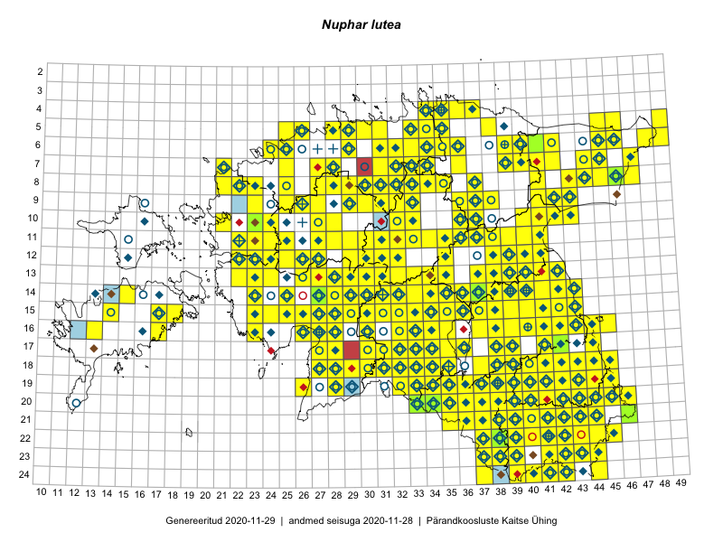

Nuphar lutea
Uuendatud: 2016-12-01
Kaardile koondatud taksonid: Nuphar lutea (L.) Sm.; Nuphar luteum (L.) Sm.

Kaart põhineb 513 kirjel, neist vaatlusi 512 ja eksemplare 1.
Kuvatud viited 20 esimesele andmebaasikirjele, ülejäänud PlutoFis
- Malle Leht: 2015-07-09: : ala
- Malle Leht: 2015-08-02: : ala
- Toomas Kukk, Eerik Leibak: 2015-08-09: 14-15: ala
- Toomas Kukk, Eerik Leibak: 2015-08-09: 14-15: GPS punkt
- Toomas Kukk, Peedu Saar: 2014-09-25: 07-42: ala
- Toomas Kukk, Peedu Saar: 2014-09-23: 06-42: ala
- Tiit Hallikma, Indrek Tammekänd, Toomas Kukk: 2015-06-09: 12-29: ala
- Tiit Hallikma, Toomas Kukk: 2015-07-21: 05-45: ala
- Tiit Hallikma, Toomas Kukk: 2015-07-21: 05-45: GPS punkt
- Peedu Saar, Eerik Leibak: 2015-07-30: 16-41: GPS punkt
- Ott Luuk, Toivo Sepp: 2015-07-29: 09-31: ala
- Peedu Saar, Ott Luuk: 2015-06-21: 14-41: ala
- Ott Luuk, Peedu Saar: 2015-07-27: 11-35: ala
- Peedu Saar: 2015-07-04: 18-44: ala
- Peedu Saar: 2015-07-14: 15-38: ala
- Tiit Hallikma, Toomas Kukk: 2015-07-22: 05-49: ala
- Peedu Saar, Eerik Leibak: 2015-07-30: 16-41: ala
- Peedu Saar, Liina Oja: 2015-06-09: 17-27: ala
- Ott Luuk, Peedu Saar: 2015-08-12: 23-43: ala
- Peedu Saar, Liina Oja: 2015-06-10: 14-31: ala